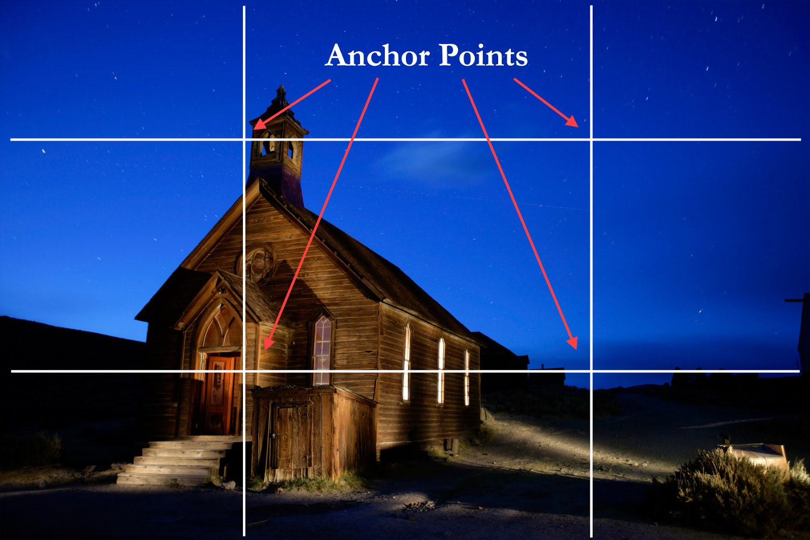
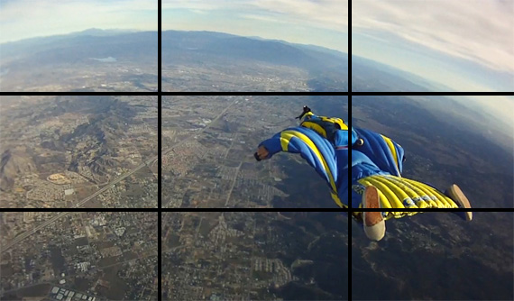
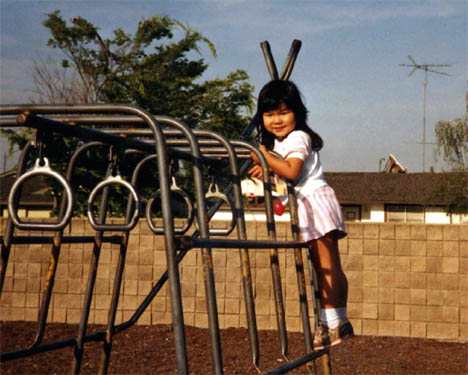

"Liked The Photos Above!! Then You Can Click One On Your Own"
Here we will give u the Proper guides of Photography
1. Fill The Frame / Cropping
If your shot is in danger of losing impact due to a busy background/surroundings, crop in tight around your main point of focus, eliminating the background so all attention falls on your main subject. This works particularly well with portraits when you're trying to capture something more intimate and focused or are shooting in a busy location where what's around them would just cause a distraction. Filling the frame could involve you capturing them from the waist up or for more impact, fill the frame with just their face. Patterns are another subject that when capturing, you should fill the frame with, aligning it up carefully to ensure it's straight.
2. Don't Cut Off Limbs
Keep an eye on the edges of your frame to make sure the person/animal you're photographing hasn't had any of their body parts chopped off by it. Cutting off your cat's tail, your dog's ears or even part of your model's head, will not only spoil your shot, the unintentional limb chopping can pull attention away from what the viewer should really be looking at.

3. Understand The Rule Of Thirds
The most basic of all photography rules is all about dividing your shot into nine equal sections by a set of vertical and horizontal lines. With the imaginary frame in place, you should place the most important element(s) in your shot on one of the lines or where the lines meet. It's a technique that works well for landscapes as you can position the horizon on one of the horizontal lines that sit in the lower and upper part of the photograph while you're vertical subjects (trees etc.) can be placed on one of the two vertical
lines.

4. Use Frames
Frames have various uses when it comes to composition. They can isolate your subject, drawing the eye directly to it, they can hide unwanted items behind it, give an image depth and help create context. Your frame can be man-made (bridges, arches and fences), natural (tree branches, tree trunks) or even human (arms clasped around a face).
5. Make The Most Of Lead In Lines / Shapes
Our eyes are unconsciously drawn along lines in images so by thinking about how, where and why you place lines in your images will change the way your audience view it. A road, for example, starting at one end of the shot and winding its way to the far end will pull the eye through the scene. You can position various focal points along your line or just have one main area focus at the end of your line that the eye will settle on. Shapes can be used in a similar way, for example imagine a triangle and position three points of focus at the end of each point where the lines of the shape meet. By doing so you create balance in your shot as well as
subtly guiding the eye.
6. Simplify – Know Your Focus
Having too much going on in your frame can mean the person who's looking at it just keeps searching for a point of focus and soon gets bored of looking when they can't find one. This doesn't mean you can't have secondary points of focus, it just means you should make every effort to make sure they don't steal all the limelight. Take a look at our tutorial on using points of interest in
photography for more information on this.
7. Watch The Background
Unsightly objects, overexposed or particularly bright areas and blocks/dots of bright colour will all pull the eye from what it's meant to be focusing on so take a good look at your background before you take your shot and if possible, find a background that's not so obtrusive. If you're working on portraits make sure there's no unwanted items sticking out of your subject's head and unless it adds to the shot, throw the background out of focus. To do this, select a wider aperture if working with a DSLR or select the Portrait Mode on a compact camera to tell it you want to work with a wider aperture. If you're working with plants and flowers try creating your own backgrounds out of card and material which can be slipped into your bag alongside your camera gear.

8. Look For Symmetry/Patterns
Filling your frame with a pattern that repeats gives the shot more impact, exaggerating the size/number of the objects you're photographing. Shots where there's symmetry in them such as lamp posts lining either side of a street, a long line of trees or a series of arches can also be used to guide the eye to a single point. Just remember you need a focus point at the end of your shot otherwise it won't work as well. Symmetry can also involve non-related objects that resemble each other in shape, colour or texture. To be different, break the repetitive pattern with one shape/colour that stands out from the rest. You'll probably have to play around to see how positioning the 'odd one out' changes the composition/feeling of your shot.
9. Create Depth
Having fore-, middle- and background detail will add depth to your image as well as draw the eye through the picture. Compositional elements that compliment each other, for example with colour or by association, work well but do be careful with the size of objects you use and how you place them as you don't want the shot to be thrown off balance. You don't want a rock in the foreground of your landscape shot, for example, drawing the eye away from the hills and mountains in the background. Adding water to the foreground can also lighten your shot as well as adding an extra element of interest as it reflects the sky back out.